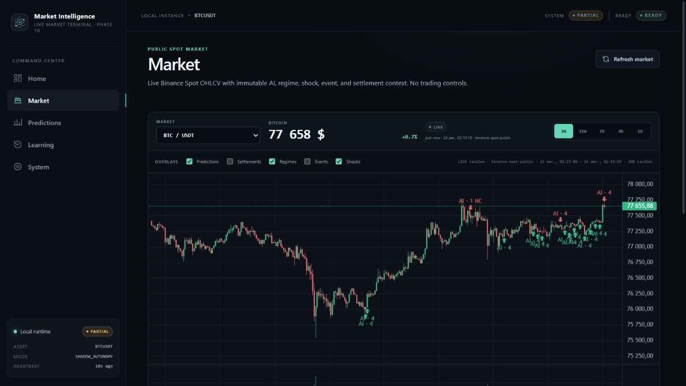
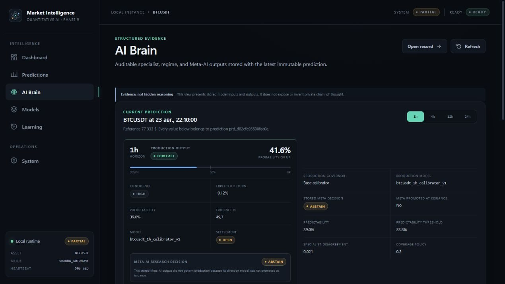

Market Intelligence AI
Исследовательская платформа анализа рынков: 376 моделей-экспертов, Meta-AI над ними и система, которая сама проверяет собственные прогнозы.A market research platform: 376 specialist models, a Meta-AI on top of them, and a system that audits its own forecasts.
market-intelligence · local instance


- РольRole
- Всё: архитектура, данные, ML, бэкенд, фронтенд, тестыEverything: architecture, data, ML, backend, frontend, tests
- МасштабScale
- 20 фаз · 192 тыс. строк · 3 035 тестов20 phases · 192k lines · 3,035 tests
- СтекStack
- PythonDuckDBReactTypeScriptBinance APIGDELTLLM
ЗадачаChallenge
Понимать состояние рынка по любому активу и давать вероятностную оценку, которая опирается на доказательства, а не на догадки модели.Read the state of any market and give a probabilistic assessment that rests on evidence, not on a model's guesswork.
Что я построилWhat I built
- Сбор живых данных Binance, новостей GDELT, других активов и деривативов в DuckDBLive ingestion of Binance data, GDELT news, cross-asset and derivatives feeds into DuckDB
- Память исторических ситуаций: поиск рыночных аналогов вместо одной гигантской таблицыA memory of past market situations: analogue search instead of one giant training table
- 376 экспертов по активам и горизонтам и Meta-AI, который учитывает их корреляцию376 experts across assets and horizons, and a Meta-AI that accounts for their correlation
- Круглосуточный рантайм: расписание, управляемое самообучение, виртуальный брокер и планировщик рисковAn always-on runtime: scheduling, governed self-learning, a paper broker and a risk planner
- Веб-терминал на React и ИИ-аналитик в Telegram, который отвечает только по сохранённым даннымA React market terminal and a Telegram AI analyst that answers only from stored evidence
РезультатResult
9 / 376моделей подтвердили устойчивость на новых данных и допущены к работеmodels proved robust on unseen data and were cleared for use
70%сравнений выиграл агрегатор, учитывающий корреляцию экспертовof comparisons won by the correlation-aware aggregator
2,75×во столько раз наивный подсчёт голосов завышает уверенностьhow much naive vote counting overstates confidence
Система только анализирует и ведёт виртуальный портфель. Реальных сделок и инвестиционных советов нет.The system only analyses and runs a paper portfolio. It places no real trades and gives no investment advice.